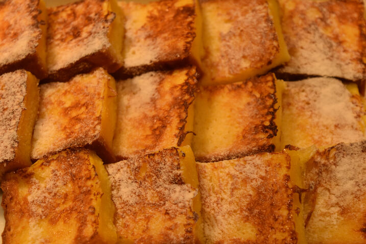

French Toast

Photo by Andrew Currie, imported from
Wikimedia.
Description
Makes for a great breakfast
Ingredients
- 3-5 eggs.
- Salt.
- Sliced bread.
- Vegetable oil.
- Butter.
Steps
- (Optional) Toast the sliced bread.
- Whisk eggs and salt in a bowl untill it looks uniform.
- Dip slices of bread in the mixture.
- Preheat the pan with a bit of vegetable oil on it (you can also add a small slice of butter).
- Put Slices of bread on a pan and cover and put a lid on it.
- Flip the pieces once the bottom side of the toasts looks golden.
- After the same happens to the other side, the dish is ready to serve (putting a piece of buttrt on top is an option).
Home